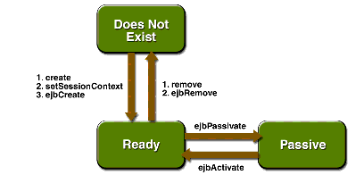
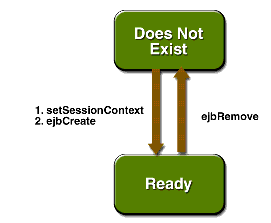
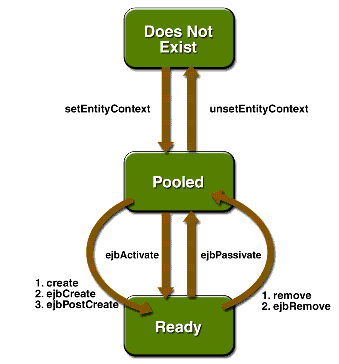
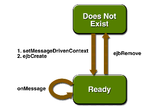

www.netbeans.org
Feedback
java.sun.com
|
Download
www.netbeans.org |
|
API
Feedback java.sun.com |
The Life Cycles of Enterprise Beans
An enterprise bean goes through various stages during its lifetime, or life cycle. Each type of enterprise bean--session, entity, or message-driven--has a different life cycle.
The descriptions that follow refer to methods that are explained along with the code examples in the next two chapters. If you are new to enterprise beans, you should skip this section and try out the code examples first.
The Life Cycle of a Stateful Session Bean
Figure 4-4 illustrates the stages that a session bean passes through during its lifetime. The client initiates the life cycle by invoking the
createmethod. The EJB container instantiates the bean and then invokes thesetSessionContextandejbCreatemethods in the session bean. The bean is now ready to have its business methods invoked.

Figure 4-4 Life Cycle of a Stateful Session Bean
While in the ready stage, the EJB container may decide to deactivate, or passivate, the bean by moving it from memory to secondary storage. (Typically, the EJB container uses a least-recently-used algorithm to select a bean for passivation.) The EJB container invokes the bean's
ejbPassivatemethod immediately before passivating it. If a client invokes a business method on the bean while it is in the passive stage, the EJB container activates the bean, calls the bean'sejbActivatemethod, and then moves it to the ready stage.At the end of the life cycle, the client invokes the
removemethod, and the EJB container calls the bean'sejbRemovemethod. The bean's instance is ready for garbage collection.Your code controls the invocation of only two life-cycle methods: the
createandremovemethods in the client. All other methods in Figure 4-4 are invoked by the EJB container. TheejbCreatemethod, for example, is inside the bean class, allowing you to perform certain operations right after the bean is instantiated. For example, you might wish to connect to a database in theejbCreatemethod.The Life Cycle of a Stateless Session Bean
Because a stateless session bean is never passivated, its life cycle has only two stages: nonexistent and ready for the invocation of business methods. Figure 4-5 illustrates the stages of a stateless session bean.

Figure 4-5 Life Cycle of a Stateless Session Bean
The Life Cycle of an Entity Bean
Figure 4-6 shows the stages that an entity bean passes through during its lifetime. After the EJB container creates the instance, it calls the
setEntityContextmethod of the entity bean class. ThesetEntityContextmethod passes the entity context to the bean.After instantiation, the entity bean moves to a pool of available instances. While in the pooled stage, the instance is not associated with any particular EJB object identity. All instances in the pool are identical. The EJB container assigns an identity to an instance when moving it to the ready stage.
There are two paths from the pooled stage to the ready stage. On the first path, the client invokes the
createmethod, causing the EJB container to call theejbCreateandejbPostCreatemethods. On the second path, the EJB container invokes theejbActivatemethod. While an entity bean is in the ready stage, an it's business methods can be invoked.There are also two paths from the ready stage to the pooled stage. First, a client can invoke the
removemethod, which causes the EJB container to call theejbRemovemethod. Second, the EJB container can invoke theejbPassivatemethod.

Figure 4-6 Life Cycle of an Entity Bean
At the end of the life cycle, the EJB container removes the instance from the pool and invokes the
unsetEntityContextmethod.In the pooled state, an instance is not associated with any particular EJB object identity. With bean-managed persistence, when the EJB container moves an instance from the pooled state to the ready state, it does not automatically set the primary key. Therefore, the
ejbCreateandejbActivatemethods must assign a value to the primary key. If the primary key is incorrect, theejbLoadandejbStoremethods cannot synchronize the instance variables with the database. In the section The SavingsAccountBean Example, theejbCreatemethod assigns the primary key from one of the input parameters. TheejbActivatemethod sets the primary key (id) as follows:In the pooled state, the values of the instance variables are not needed. You can make these instance variables eligible for garbage collection by setting them to
nullin theejbPassivatemethod.The Life Cycle of a Message-Driven Bean
Figure 4-7 illustrates the stages in the life cycle of a message-driven bean.
The EJB container usually creates a pool of message-driven bean instances. For each instance, the EJB container instantiates the bean and performs these tasks:

Figure 4-7 Life Cycle of a Message-Driven Bean
Like a stateless session bean, a message-driven bean is never passivated, and it has only two states: nonexistent and ready to receive messages.
At the end of the life cycle, the container calls the
ejbRemovemethod. The bean's instance is then ready for garbage collection.
|
Download
www.netbeans.org |
|
API
Feedback java.sun.com |
All of the material in The J2EE(TM) 1.4 Tutorial is copyright-protected and may not be published in other works without express written permission from Sun Microsystems.